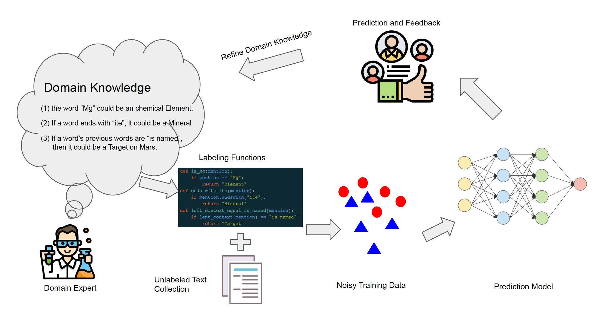
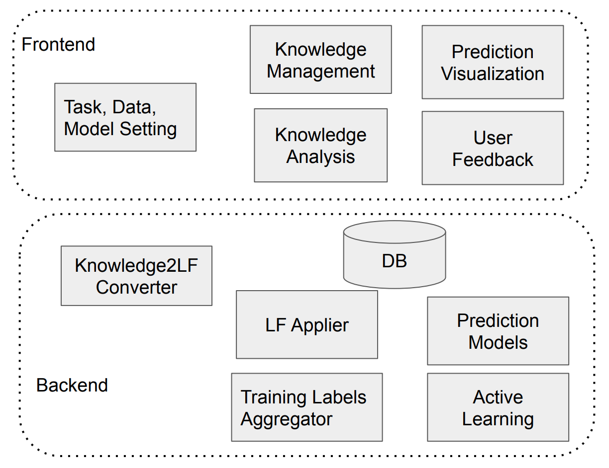

A Teachable and Domain Robust Semantic Information Extraction System
What is THIRSTY?
THIRSTY is an information extraction (IE) system that allows users to easily and quickly build an IE system of good performance without any writing any codes. THIRSTY uses experimental results to demonstrate effectiveness in semantic entity recognition and relation classification tasks in medical and scientic domains.

Figure 1. The workflow of THIRSTY
Without manual annotation, THIRSTY takes advantage of experts' knowledge directly
to obtain weakly labeled data and then train an IE model using the
generated weak labels.
The basic usage flow is shown in Figure 1. First, domain experts input
their knowledge, in the form of functions, that are useful to identify specific entities or relations.
Second, the system will automatically convert their knowledge descriptions
into labeling functions, and then collect labels by
applying the labeling functions on the data. Since the labels generated
by different labeling functions could be conflict and noisy. The system
uses a generative model to clean and aggregate the
weakly generated training labels. Finally, the automatically labeled
data will be used to train final prediction entity recognition or
relation extraction models.
How is THIRSTY built?
As shown in Figure 2, THIRSTY has the following components:
System configuration component that uses spaCy to preprocessthe text documents.
Knowledge input and management component
that provides Example, Lexical, and Contextual knowledge types for tasks.
Knowledge2LF converter
that converts knowledge descriptions to labeling functions and generates weak labels
Knowledge analysis component
that allows users to investigate knowledge properties and mutual relations.
Builtin ER and RE models
that allows users to easily train models based on the generated weak training data.
the User feedback collector and active learning component
that allows user to actively choose training samples to enhance the model performance.

Figure 2. The architecture of THIRSTY
How does THIRSTY work?
THIRSTY can perform entity recognition:
THIRSTY can perform entity recognition:
NeuroNER presents the following advantages over the existing NER systems:
Leverages the state-of-the-art prediction capabilities of neural networks (a.k.a. "deep learning")
Enables the users to create or modify annotations for a new or existing corpus
Is cross-platform, open source, freely available, and straightforward to use
Where can NeuroNER be downloaded?
NeuroNER runs on Linux, Mac OS X, and Microsoft Windows. It requires Python 3.5, TensorFlow 1.0, and scikit-learn. NeuroNER's code can be found here: https://github.com/Franck-Dernoncourt/NeuroNER
How to use NeuroNER?
The diagram below presents an overview of NeuroNER. NeuroNER can be used as follows:
Train the neural network that performs the NER. During the training, NeuroNER allows to monitor the network
Evaluate the quality of the predictions made by NeuroNER. The performance metrics can be calculated and plotted by comparing the predicted labels with the gold labels. The evaluation can be done at the same time as the training if the test set is provided along with the training and validation sets, or separately after the training or using a pre-trained model
Deploy NeuroNER for production use: NeuroNER labels the deployment set, i.e. any new text without gold labels.
How does the NeuroNER engine work?
The NeuroNER engine is based on artificial neural networks (ANNs). Specifically, it relies on a variant of recurrent neural network (RNN) called long short-term memory (LSTM).
The NER engine's ANN contains three layers:
Character-enhanced token-embedding layer,
Label prediction layer,
Label sequence optimization layer.
The following diagram presents the architecture of the ANN used in the NeuroNER engine.
How to install NeuroNER?
The GitHub repository explains the installation instructions. Here is a demo showing how easy it is when using the installation script on Ubuntu: the script installs everything you need and start training on the CoNLL-2003 dataset. After a few training epochs, one obtains state-of-the-art results.
Using NeuroNER with BRAT
NeuroNER integrates with BRAT so that the user may easily view, amend or create annotations:
Using NeuroNER with TensorBoard
In addition to the plots generated by NeuroNER, one can use TensorBoard to analyze NeuroNER network and results in real-time or retrospectively:
The user may also view the NeuroNER engine interactively: